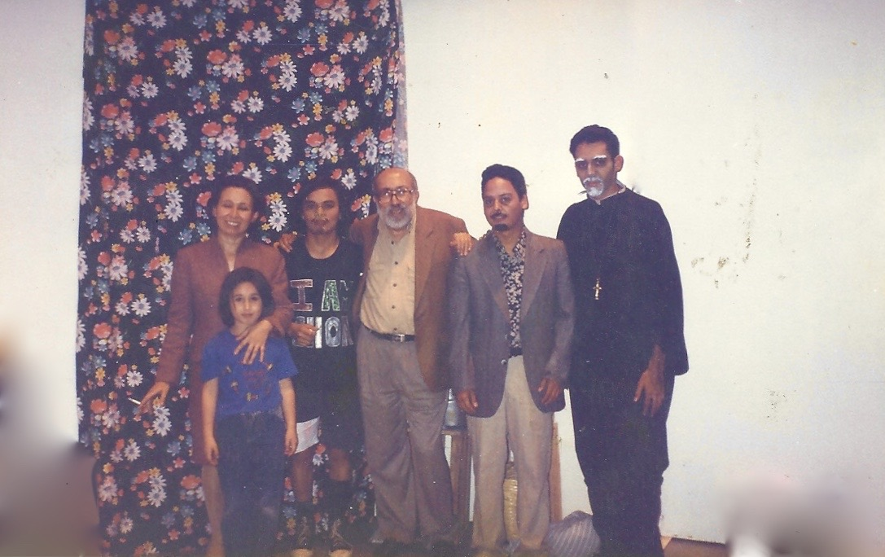

Formación
Capacitación y Crecimiento

Una de las principales prioridades de nuestra agrupación es la constante profesionalización de sus integrantes. Por ello, hemos organizado capacitaciones y talleres con diversos especialistas y maestros de destacados grupos de teatro, tanto de la Ciudad de México como de otros países. Además, mantenemos un taller permanente abierto a la comunidad, donde de forma semanal realizamos entrenamientos y actividades formativas para seguir desarrollando nuestras habilidades.